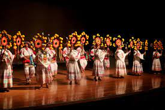
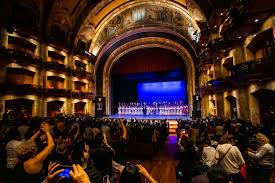
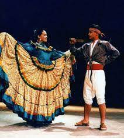
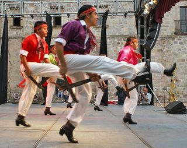
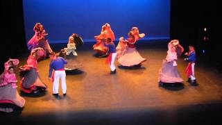

El Ballet Mexcaltitán (Ballet Mexcaltitán, Danza y Arte de México) fue fundado en 1989 por el Maestro Jaime Buentello Bazán en conjunto con el profesor Jorge Casillas Domínguez en el estado de Nayarit, México. Su objetivo es promover y consolidar la danza folklórica de dicho estado, para hacerla única y que represente a la región. Sin embargo, la compañía también interpreta otras danzas latinoamericanas y contemporáneas, al igual que otros estilos mexicanos.
El grupo de bailarines está conformado principalmente por jóvenes; sin embargo, la organización está dividida en dos secciones: el grupo principal y el grupo de niños llamado Mexcatitlán Infantil, conformado por artistas menores de edad en entrenamiento para integrarse al grupo principal. Actualmente, la compañía de baile recibe apoyo del gobierno del estado de Nayarit. Actualmente el Ballet Mexcaltitan de Gobierno del Estado de Nayarit, es dirigido por el Maestro Carlos Alberto Avalos Peña.
 
Algunas de las dazas mas famosas de este ballet son las del estado de Nayarit.
Gracias a los trabajos de Jaime Buentello y Arnulfo Andrade, en el siglo pasado se estableció la clasificación de los distintos bailes o sones que lo conforman. Algunos de los principales son: El Coamecate, El Diablo, Los Negritos, Los Bules y El Gallito.
| Bailes | Nayarit Meztizo | Los Machetes | El Gatillo |
| Vestimenta Mujeres | Las mujeres visten una blusa de satín en color fuerte con un holán en forma de pechera ribeteado con encaje de bolillo, la falda es amplia con un doble holán en la parte inferior, el holán de abajo es de la misma tela de la blusa. | La vestimenta de las damas en el Baile de los Machetes consiste en una blusa de satín de algún color vivo para llamar la atención, también lleva una falda amplia con doble olán de la misma tela que la blusa. | Es de blusa de satín en color fuerte con un olán en forma de pechera ribeteado con encaje de bolillo, la falda es amplia con un doble olán en la parte inferior, el olán de abajo es de la misma tela de la blusa. |
| Vestimenta Hobres | Como en todo el folklore mestizo e indígena, los hombres usan pantalones y camisa de manta cruda o lavada, amarrados a la cintura por un ceñidor. Una chamarra de satín, tafeta o seda, desabotonada y atada al frente. Paliacate ceñido a la sien. Calzan huaraches o botas. | sa calzón y camisa de manta con un paliacate debajo del cuello, faja roja y camisa ceñida; la faja puede ser de algodón o lana, porta sombrero de ala corta y cuatro pedradas y, además lleva huaraches. | Vestuario de Hombre: Usa calzón y camisa de manta con un paliacate debajo del cuello, faja roja y camisa ceñida; la faja puede ser de algodón o lana, porta sombrero de ala corta y cuatro pedradas y, además lleva huaraches. |
| Imagen Vetimenta |  |  |  |